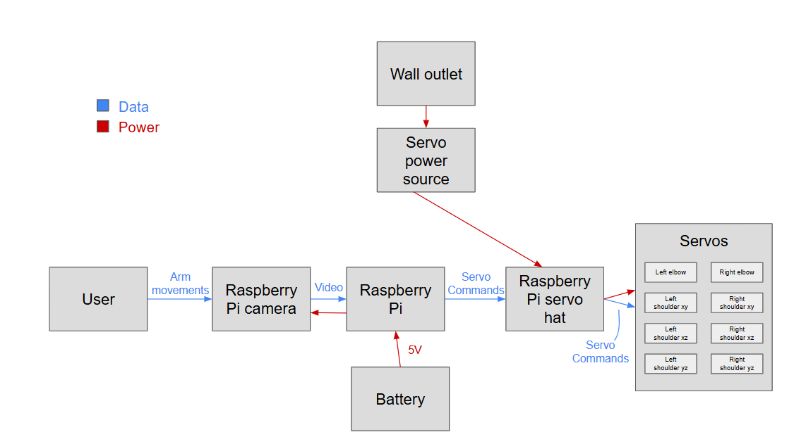

An overview of L.A.D's system design from a mechanical, electrical, and software perspective.
Fig. 1
Fig. 2
Above are two versions of a system diagram of LAD, showing how data and power flow through the system. Fig. 1 shows our first iteration of the system diagram, showing all of the interactions within LAD that we anticipated that we would have at the beginning of the project. Fig. 2 shows the updated version that we created in Sprint 3, as by then, we had a better idea of how the different parts would actually interact in the end product and expanded the diagram out to include the user.
For more information about each subteam's system, click below!
Designing servo mounts for 3D motion, building the frame, and creating the shell!
learn moreWiring components, connecting the camera, motors, and LEDs, and powering the whole robot!
learn more
Processing data from the camera, calculating angles, moving motors, and controlling LEDs!
learn moreThis site was created with the Nicepage